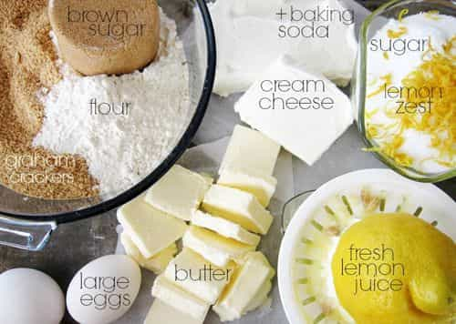
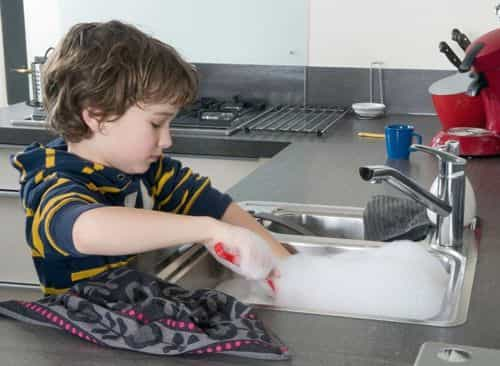

< < < Back
8 Reasons You Must Teach Your Son To Cook – Return Of Kings
A man should not be dependent on women for anything except that which women are uniquely equipped to provide: love and companionship, bearing his children, and nurturing them. Being self-sufficient is a man’s source of pride and the essence of independence. Anybody can cook. In fact, most women are delighted to find a man who can cook—modern women often don’t know their way around the kitchen. Teaching your son to cook is a vital step in raising him to be a man.
1. Cooking gives a boy adult responsibilities
Cooking is a connection with the real world. It gives a boy the chance to work alongside adults and make a contribution to the family. Contrast this with school work, in which the kid passively takes whatever the adults hand out, or leisure time activities which are mostly intended to keep him busy. Every kid is eager to be respected as a full-fledged human being.
A child can start to help in the kitchen at an early age. We let our son use a paring knife to cut apples at two years old. He is now up to getting the ingredients out of the cupboards, measuring and mixing, weighing ingredients, and feeding meat and vegetables into the food processor.
Taking him grocery shopping lets a boy have some impact on the menu. He will tell you if he would rather have oranges than apples, broccoli rather than spinach. It is also a chance to teach him about value. How much do the apples cost relative to the oranges? It gives him a chance to think about ingredients. Are there really evil chemicals in soft drinks, like everybody says? Is there anything special about bottled water that makes it worth a dollar per bottle? How much sugar is there in a candy bar? Besides which, carrying groceries—and even being allowed to buy some things on his own—makes him feel important.
2. Cooking is educational
Grocery shopping and cooking demand some mental math. If two pizza crusts take 2 ½ cups of flour, how much do you need for three? If olives are on sale, buy one can and get another for half price, how much of a discount is that? Working as we do with American recipes in a metric kitchen, there is a lot of opportunity for conversion. Yesterday’s fish required a hot oven—450°F. Quick, in your mind—how much is that in centigrade? That is not a question for a five-year-old, but a high schooler should be able to handle it.
Making our own sauerkraut, pickles and pizza dough offers lessons in biology and chemistry. Why does bread rise? What makes pickles sour? Why aren’t pancakes sour when you make them using vinegar and soda? Inquiring young minds want to know!
A real man should be the master of his world. He should be handy, and a good part of a father’s job is to teach a boy to be handy. Boys have a fascination with screwdrivers, hammers, saws and all kinds of machinery. A responsible father will ensure that his son has a chance to work with all of them. The advantage of starting such work in a kitchen is that the tools are generally easier to use. A kid can begin at a younger age. Also, mother is more likely both to work in the kitchen than the toolshed. The boy can learn from both parents.
3. Cooks pay attention to their health

Cooks know what they are putting into their bodies. This is cheesecake
A cook is aware of what he is putting into his body. He measures the sugar going into a pie or the cream going into a quiche. Men have a vague notion that the stuff they buy at Cinnabon or Chipotle are not good for them, but there is no graphic display equivalent to seeing the ingredients laid out on the kitchen table prior to cooking. In addition, people who publish recipes have different motivations than restaurateurs. They try to convince you that the recipe will be tasty and nutritious.
Restaurants encourage you to spend as much as possible. A cookbook will balance a meal among the three major food groups: meat and dairy, fruits and vegetables, and carbohydrates. A fast-food operation balances among three groups of seductive poisons: sugar, salt and fat. Teaching your kid to cook is a significant step toward keeping him healthy.
Cooking is a better way to occupy the child’s time than electronic amusements. In addition to giving him the satisfaction of creating something useful for to the family, it will keep him busy. Our five-year-old can spend half an hour at a time cracking walnuts or stringing popcorn for the Christmas tree. Every walnut presents a unique challenge. How should he position the nutcracker on this particular nut? How can he dig out the last piece of nutmeat? Even time spent on the computer is not wasted if he is doing something like researching mince pie recipes with daddy.
Cooking is exercise. Most of the work is done standing up, moving around the kitchen. It involves a lot of lifting, moving, chopping and scrubbing. While it will not replace a serious workout regimen, it certainly beats sitting on the couch and watching the boob tube.
4. Cooking is thrifty
A lot of young people do not learn the habit of thrift. They start life with a debt-slave mentality, accepting with resignation that they will be behind the eight ball all their lives, starting with their mountain of educational loans. They close their eyes the consequences, order what they want in a restaurant and let the credit card debt stack up.
Wrong! At a restaurant, the raw ingredients account for only about a third of the final bill. Cooking saves money—your kid can cook for himself and pocket the difference. The responsible person who prepares his own meals and watches his pennies will come out ahead of the game. He is in charge of his life. He will wind up with more money, and of course a better selection of the good things in life, such as marriage partners.
5. Cooks learn to clean up

He’s proud of himself – and helpful as well
You can’t work in a messy kitchen. A chef has to start with clean counters and know where to find his pots, pans and cooking utensils. An apprentice chef quickly learns that there is no substitute for cleanliness and order… working in a messy kitchen takes more time and results in more mistakes.
Cleaning up is guaranteed to bring praise from the adults. Kids can start by cleaning the table, then putting things away, then progress to cleaning dishes and on to pots and pans. There is work at every age level.
6. Cooking saves time
Even “fast food” is not that fast when you take into account the travel time to get to the restaurant. A man who learns to be efficient in the kitchen can wind up eating better, more cheaply, and even more quickly. A simple dinner such as hamburger or pork chops, frozen vegetables and rice takes about half an hour to cook. While it is cooking, a guy can take a moment or two to glance at his email.
The serious cook plans ahead. If he is tight on time, as most young people with serious jobs are, he can plan a week or so in advance. Make do with one major trip to the grocery store. Cook dishes that will serve for two or three meals. If it’s chicken, plan to eat a third of it now, leave another third in the refrigerator for tomorrow, and put the other third in the freezer, ready to microwave in a pinch.
7. Ladies love men who cook

Knives are for guys, dude. You should be showing her.
Sometimes a young man has unexpected company. Perhaps a young woman. What better place to invite her than to his house? It is cheaper than a restaurant and closer to the sofa. He might have something in the freezer that he can microwave quickly, such as the above-mentioned chicken. He might have something a little fancier, perhaps a quiche that he cooked for himself—it is not hard to do. Imagine how impressed she will be just to find a guy with a homemade quiche in his refrigerator! Homemade borscht was instrumental in my getting married.
When a girl comes over, what you talk about? Men are from Mars, women are from Venus. It can sometimes be difficult to come up with a topic of conversation. However, most women are interested in cooking and if a guy can converse comfortably on the subject, it provides common ground. Even more promising, she may be interested in sharing the work in the kitchen. What an opportunity! “Dear, can you take the lid off this jar? It’s very tight.” “Dear, I am scared of that great big French knife, and I cry easily. Could you please chop the onions?”
As they are working together in a small kitchen they just accidentally brush up against each other every now and again. He might even have to put his arms around her to show her how to hold the paring knife. The opportunities are endless. It could even lead to grandchildren
8. Cooking is highly social
Chefs at a French cuisine party. Cassoulet, quiche, salad and eclairs
It is reasonable to expect that your son will live in a group house at some point. With the right bunch of people, he may be inspired to host a party. It may be in the apartment, the back yard, or even a picnic in the park or the beach. Expect people to bring guitars, boom boxes, and of course something to drink. There is lots of party food that is easy to cook. I favor steak—marinate it, grill it, and slice it thinly so that a person can take only what they want, and choose between rare and well done.
Potato salad ensures that nobody goes hungry. He can show off by fixing something exotic, such as dolmas or shrimp bread. Finding a woman is a numbers game. The more presentable women come by the house, the more likely he is to wind up with a good one. She might arrive on the arm of some other good-looking hunk, but conclude from the cuisine that your kid is a better marriage prospect and chat him up.
Conclusion
Throughout history the hearth has been a symbol of home life. Cooking is an elemental, and until very recently an essential aspect of family life. It is not coincidental that the demise of the American family has coincided with the rise of commercial food preparation.
Cooking is not trivial. Observe food stamp recipients’ tendency to buy junk food because they simply do not know their way around a kitchen. The young man who learns how to cook well will have mastered a valuable life skill. It doesn’t take much time or money—in the end it will save his family both.
Most important, knowing how to cook is a sign that a man is serious about family and is likely to be a good husband. If your objective as a parent is to raise successful sons who will give you grandchildren, teaching them to cook is an investment you must make.
Read More: 6 Reasons Why You Should Know How To Cook